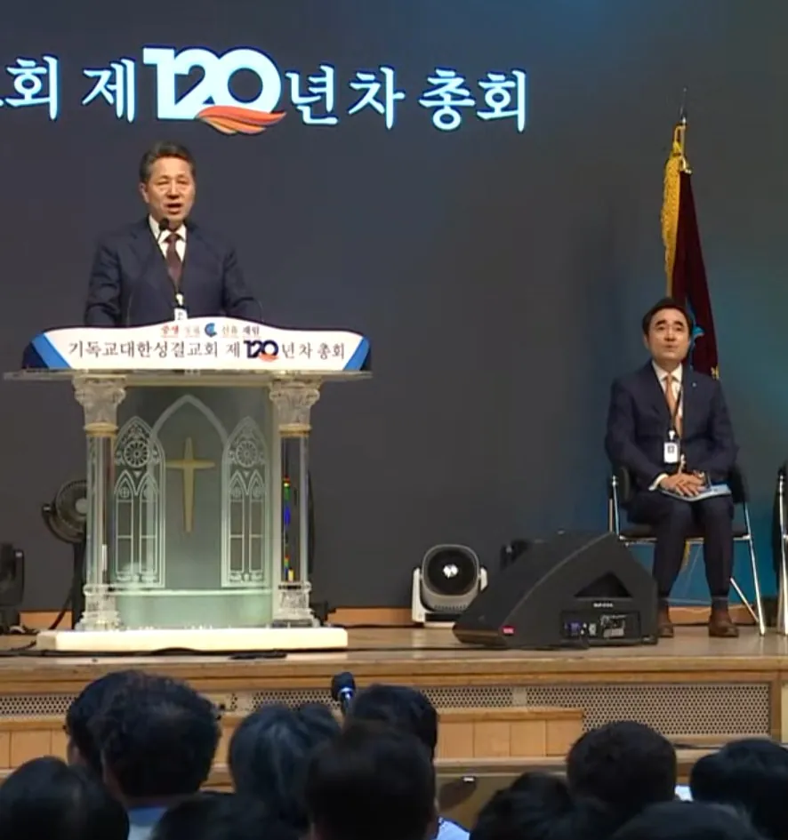

한교총 첫 경선, 차기 대표회장 후보에 이기용 목사
교단 규모별 순번으로는 예장통합 차례였으나 추대 관례 대신 경선을 치렀다. 기성 이기용 총회장이 상임회장단 14명 중 8표를 얻었고, 12월 4일 정기총회 인준을 거쳐 취임한다.
한국교회총연합(대표회장 김정석 목사, 이하 한교총)은 11월 12일 서울 종로구 한교총 회의실에서 상임회장단회의를 열고 기독교대한성결교회(이하 기성) 총회장 이기용 목사를 차기 대표회장 후보로 선출했다. 교단 규모에 따른 순번대로라면 대한예수교장로회 총회(이하 예장통합)가 대표회장을 맡을 차례였다. 한교총은 그동안 연합 정신을 앞세워 추대 방식을 이어 왔으나, 이번에는 출범 이후 처음으로 경선을 거쳐 후보를 정했다. 이 목사는 12월 4일 열리는 한교총 정기총회에서 총대들의 인준을 받으면 대표회장에 취임한다.
두 후보가 동시에 나선 배경
이날 인선위원회는 권위영 목사(예장통합 총회장)와 이기용 목사 두 사람을 차기 대표회장 후보로 상정했다. 순번제 관례에 따르면 단일 후보를 추대하는 것이 자연스러운 수순이었다.
인선위는 두 후보가 함께 오르게 된 경위를 설명했다. 교계 원로들이 권 목사에게 미리 양해를 구하지 않은 채 이 목사에게 대표회장직을 제안했고, 그 결과 두 교단 총회장이 동시에 후보로 나서게 됐다는 것이다.
교계 방송 보도에 따르면 이에 앞서 예장통합이 한교총 차기 대표회장 자리에 관심이 없다는 소문이 교계에 돌았다. 교단 안팎에서 소통에 혼선이 빚어진 가운데 일부 목회자들이 이 목사에게 대표회장직을 제안하면서 경선으로 이어졌다.
두 차례 투표 끝에 결정
상임회장단은 인선 절차에 따라 가·나·다 군별로 공동대표회장 후보를 먼저 추천받고, 이들 가운데 1명을 대표회장으로 선출하기로 합의했다. 회의는 비공개로 진행됐고, 대표회장 선임 문제를 두고 1시간 넘게 논의가 이어졌다. 회의 도중 취재진에게 자리를 비켜 달라는 요청이 나오기도 했다.
상임회장단 14명이 참석한 가운데 두 후보를 놓고 1차와 2차 두 차례 투표가 진행됐다. 이 목사는 두 차례 투표에서 모두 과반을 얻었고, 상임회장단 14명 가운데 8표를 얻어 차기 대표회장 후보로 확정됐다.

권 목사, 결과 수용
경선 이후 혼선은 일단 수습되는 모양새다. 권 목사는 상임회장단의 결정을 한국교회 연합 차원에서 대승적으로 받아들이기로 하고, 공동대표회장직도 수락했다.
공동대표회장에는 가군에서 권 목사가, 다군에서 대한예수교장로회 총회(이하 예장고신) 총회장 신진수 목사가 이름을 올렸다. 차기 대표회장을 배출한 나군은 기독교대한감리회, 기독교대한하나님의성회, 기성, 기독교한국침례회로 이뤄져 있다. 나군은 소속 교단 간 협의를 거쳐 공동대표회장을 추가로 추천할지 정할 계획이다.
순번제 정관 명문화 추진
한교총은 이번 경선이 예외일 뿐 대표회장 순번제는 앞으로도 그대로 이어 가겠다는 뜻을 분명히 했다. 한교총 측은 "대표회장 선출 방식에 있어 관례적으로 순번제가 존재해 왔지만 이번에 경선 과정을 거치게 됐다"며 "향후 혼선을 막기 위해 순번제 선출 방식을 정관에 명문화하는 개정안을 준비하겠다"고 밝혔다.
한교총은 12월 4일 정기총회를 앞두고 본격적인 총회 준비에 들어갈 계획이다.
[논평] 첫 경선이 남긴 득과 실
한교총의 첫 대표회장 경선은 얻은 것과 잃은 것을 함께 남겼다.
- 얻은 것 — 교단 규모라는 정해진 순서 대신 상임회장단의 표로 대표를 정했다. 연합기관 대표를 뽑는 과정이 공개된 절차를 거쳤다는 점에서 투명성과 정당성을 높였다고 볼 수 있다. 대표회장의 자격과 역량을 따져 볼 기회가 생겼다는 의미도 있다. 패한 쪽이 결과를 받아들이고 공동대표회장을 맡기로 한 것도 연합기관으로서 성숙한 모습이다.
- 잃은 것 — 경선이 원칙에서 출발한 것이 아니라, 확인되지 않은 소문과 순번 교단의 양해 없는 후보 제안에서 비롯됐다. 소통의 혼선이 차례를 기다리던 교단의 대표회장직을 바꿔 놓은 셈이다. 권 목사의 대승적 수용으로 갈등은 봉합됐지만, 같은 일이 되풀이되지 않도록 의사소통 경로를 바로 세우는 일이 새 집행부의 과제로 남는다.
한교총이 내놓은 해법은 순번제의 정관 명문화다. 명문화는 이번과 같은 혼선을 막는 안전장치가 될 수 있다. 다만 순번을 못 박을수록 역량 있는 인물을 고를 여지는 줄어든다. 개정안은 순번의 안정성과 선택의 개방성을 함께 담아낼 장치를 고민해야 한다.